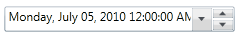

Repeat Buttons are used to spin the selected part (month, day, year, hour, second, and minute) one step up or down. The visibility of the Repeat Button can be enabled by setting the IsVisibleRepeatButton property to true. The RepeatButtonBackground, RepeatButtonBorderThickness, UpRepeatButtonTemplate, RepeatButtonTemplate, UpRepeatButtonMargin, and DownRepeatButtonMargin properties are used to customize the appearance of the Repeat Buttons.
|
XAML |
|
<syncfusion:DateTimeEdit x:Name="dateTimeEdit" Height="25" Width="230" Margin="10" IsVisibleRepeatButton="True" UpRepeatButtonMargin="1" DownRepeatButtonMargin="1"/> |

Figure 289: DateTimeEdit
See Also